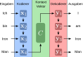
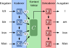
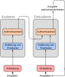

- Beim überwachten Lernen wird ein Zusammenhang zwischen Werten von Attributen von Beobachtungen und gewünschen Ausgabewerten (Klassen, Zahlen) erlernt, um Ausgabewerte für unbekannte Beobachtungen vorherzusagen.
- Die Generierung von Sequenzen funktioniert ähnlich: gegeben eine existierende Sequenz (Beobachtung) mit ihren Attributen (existierende Glieder der Sequenz), sage das nächste Glied der Sequenz voraus (Ausgabewert).
- Bei der Vorhersage des darauf folgenden Gliedes wird das zuletzt vorhergesagte Glied der Sequenz als Attributswert der Beobachtung mit betrachtet.
Exkurs: bedingte Wahrscheinlichkeiten
P(Regen) = 0.5
P(Regen | Wetterbericht) = 0.8
P(Regen | Wetterbericht, Wolken) = 0.9
Die Zusammenhänge zwischen Sequenzen und Wahrscheinlichkeiten für das nächste Wort werden anhand von riesigen Textmengen gelernt.
P(wütend | ich, hatte, noch, keinen, ...) = 0.001
P(müde | ich, hatte, noch, keinen, ...) = 0.01 "Kontext"
P(gelb | ich, hatte, noch, keinen, ...) = 0.0001
Wenn P(müde) größer als alle anderen Wahrscheinlichkeiten, dann sag "müde" voraus.
Aufgabe
Gegeben eine Sequenz von Worten, sage das nächste Wort voraus.
Anwendungsbeispiele
Herausforderungen

Quelle: Adaptiert von CS 198-126: Lecture 14 - Transformers and Attention
Aufmerksamkeit (attention)
Lerne die Wichtigkeit jedes Wortes im Kontext über Gewichte wi.
Vorteile

Quelle: Adaptiert von CS 198-126: Lecture 14 - Transformers and Attention
Aufgabe: Gegeben eine Sequenz von Worten, generiere das nächste Wort.


Einbettung: Repräsentation eines Wortes als Vektor.
Einbettung: Repräsentation eines Wortes als Vektor.
Während der Text generiert wird, wird unterschiedlichen Teilen der Eingabe Aufmerksamkeit geschenkt.
Welches Wort in der Eingabe wie viel Aufmerksamkeit bekommt wird während des Trainings erlernt.
Dieses Vorgehen ermöglicht Interaktionen über lange Textteile hinweg.
Attention is all you need (2017).

- Die Generierung von Sequenzen funktioniert nach dem Prinzip des überwachten Lernens:
- Vorangegangene Glieder der Sequenz dienen als Attributswerte der Beobachtung.
- Das nächste Glied wird vorhergesagt und dann der Beobachtung hinzugefügt.
- Zusammenhänge zwischen Sequenzen und dem nächsten wahrscheinlichen Glied werden gelernt.
- Beim Einsatz von Aufmerksamkeit (attention) wird zusätzlich noch erlernt, wie wichtig ein vorangegangenes Glied ist. Das ermöglicht sehr weit zurückreichende Interaktionen zwischen Eingabesequenz und Ausgabewert.
- Die Architektur, die Sprachmodellen wie ChatGPT zugrunde liegt heißt "Transformer" – ein Kodierer und Dekodierer mit Aufmerksamkeit.